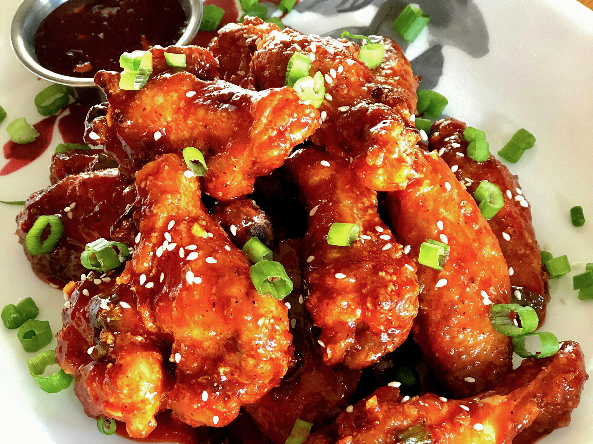

Air-Fried Korean Chicken Wings

Description
Get ready buckaroo, these chicken wings are certainly going to have you begging for more!
You're gonna wanna take a good look at this one! Trust me!
Ingredients
Sauce:
- ¼ cup hot honey (such as Mike's Hot Honey®)
- Three tablespoons gochujang (Korean hot pepper paste)
- One tablespoon brown sugar
- One tablespoon soy sauce
- One teaspoon lemon juice
- Two teaspoons minced garlic
- One teaspoon minced fresh ginger root
- ½ teaspoon salt
- ¼ teaspoon black pepper
- ¼ cup finely chopped green onions (green part only)
Wings:
- Two pounds chicken wings
- One teaspoon salt
- One teaspoon garlic powder
- One teaspoon onion powder
- ½ teaspoon black pepper
- ½ cup cornstarch
Garnish:
- Two tablespoons chopped green onions
- One teaspoon sesame seeds
Directions
- Combine hot honey, gochujang, brown sugar, soy sauce, lemon juice, garlic, ginger, salt, and black pepper in a saucepan. Bring sauce to a boil over medium heat, reduce heat, and simmer for 5 minutes. Add green onions and stir.
- Preheat air fryer to 400 degrees F (200 degrees C).
- Place wings in a large bowl and toss with salt, garlic powder, onion powder and black pepper. Add cornstarch and toss wings until fully coated. Shake each wing and place in the air fryer basket, making sure they are not touching; cook in batches
if necessary.
- Fry in the preheated air fryer for 10 minutes, shake basket, and fry an additional 10 minutes. Flip wings over and fry until chicken is cooked through and juices run clear, 7 to 8 more minutes.
- Dip each wing in the sauce and garnish with chopped green onions and sesame seeds. Serve with remaining sauce on the side.
Click to return to list of recipes